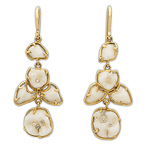
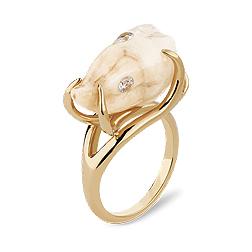
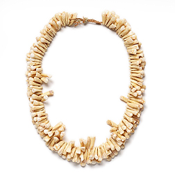

Jewelry
Our jewelry collection at Odd Duck Fashions is a celebration of the unconventional and the extraordinary. Each piece is meticulously handcrafted to embody the spirit of individuality and creativity that defines our brand. From necklaces that mimic the intricate structure of human teeth to earrings that challenge traditional aesthetics, our jewelry is designed to be a bold statement of self-expression.
Golden Grin Earrings
Elegant, unsettling, and a little bit unhinged — the Golden Grin Earrings turn dentistry into high art. Each dangling piece is hand-cast in gold and delicately cradles human-tooth forms that gleam like porcelain petals. Designed for those who smile at the strange, these earrings balance dark humor with luxe craftsmanship.
When you flash a smile, make sure it’s gold-plated.
Root Cause

Minimalist and menacing, the Root Cause Ring captures quiet rebellion in a single tooth. A smooth silver band frames one perfect molar — a subtle nod to imperfection and the beauty of human design. It’s clean, bold, and just unsettling enough to make small talk interesting.
Because every smile has a story.
Cusp Couture

Sleek, heavy, and unapologetically bold — the Cusp Couture Ring takes the classic signet silhouette and gives it a dental twist. A single molar gleams from its brushed silver face, turning everyday refinement into something deliciously disturbing. Perfect for the fearless minimalist.
Luxury with a bite.
Crown of Decay
Gothic glamour meets golden glow in the Crown of Decay Ring. A sculpted human-tooth form sits atop an elegant gold setting, gleaming with tiny gemstone “cavities” that catch the light just right. It’s equal parts creepy and couture — made for those who dare to grin at the unconventional.
Rot never looked so radiant.
Molars of Majesty
Part relic, part rebellion — the Molars of Majesty Necklace is Odd Duck Fashions’ statement piece for the truly fearless. Crafted from a collection of sculpted teeth forms strung together in wild, organic rhythm, it transforms the macabre into the magnificent. Each curve and cusp celebrates imperfection, individuality, and the art of standing out.
Wear your bite proudly.